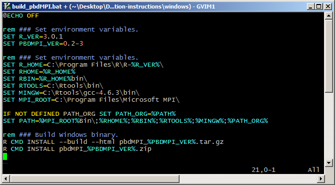
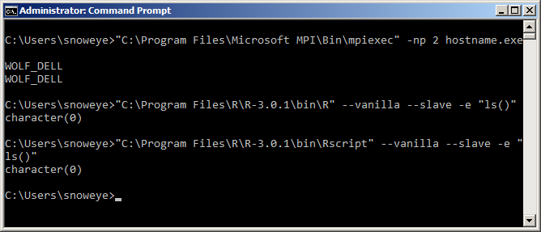
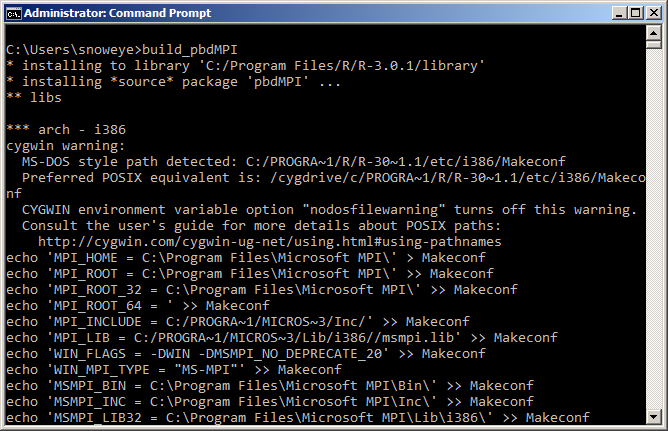
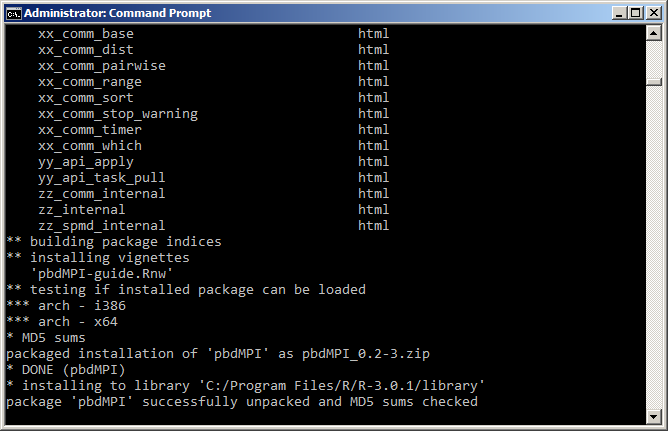
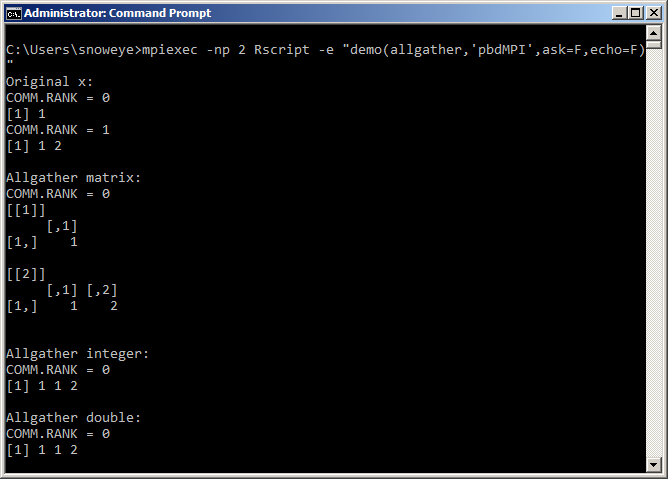

#### Install pbdMPI
1. Download "<a href="./download/build_pbdMPI.bat"
target="_blank">build_pbdMPI.bat</a>". It should looks like the next
picture, and basically I only set the default path.
I will use this batch file to build binary file
"<code>pbdMPI_0.2-3.zip</code>" from "<code>pbdMPI_0.2-3.tar.gz</code>",
and install the binary file.
Note that the building process will build both 32 and 64 bits binary
in one file.
<br>
</img>
<br>
<br>
2. I test <code>MS-MPI</code> and <code>R</code> with
full paths specified.
```
SHELL> "C:\Program Files\Microsoft MPI\Bin\mpiexec" -np 2 hostname.exe
SHELL> "C:\Program Files\R\R-3.0.1\bin\R" --vanilla --slave -e "ls()"
SHELL> "C:\Program Files\R\R-3.0.1\bin\Rscript" --vanilla --slave -e "ls()"
```
</img>
<br>
<br>
3. Check if "<code>build_pbdMPI.bat</code>" and
"<code>pbdMPI_0.2-3.tar.gz</code>"
are in the same directory, then run "<code>build_pbdMPI</code>" to
generate binary file and installation.
<br>
</img>
<br>
<br>
4. If the process is done without errors, you can see the binary file
is installed.
<br>
</img>
<br>
<br>
5. Run a quick example to test.
```
SHELL> mpiexec -np 2 Rscript -e "demo(allgather,'pbdMPI',ask=F,echo=F)"
```
</img>
<br>
<br>
---
<div w3-include-html="../preamble_tail_date.html"></div>